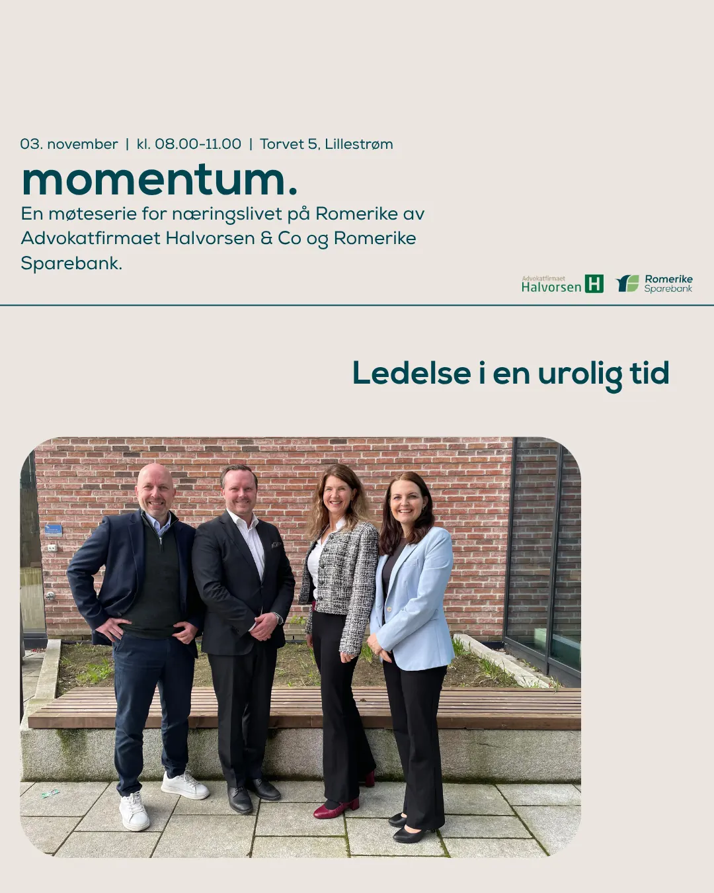

Advokatfirma · Lillestrøm
Det tryggeste valget er en advokat som kjenner saken din.
Advokatfirmaet Halvorsen & Co arbeider med privat- og næringsrett, og er ISO 9001-sertifisert gjennom Kiwa.
PrivatNæringErstatning
01 — Fagområder
Sammen finner vi de gode løsningene
Vi arbeider med saker for både privatpersoner og virksomheter.
- §1PrivatArverett, fremtidsfullmakt, samboerkontrakt, familie og barn, eiendom og tvisteløsning.
- §2NæringSelskapsrett, arbeidsrett, styrearbeid, kontrakter, transaksjoner og konkurs/insolvens.
- §3ErstatningPersonskade, trafikkulykke, yrkesskade, pasientskade og voldsoffererstatning.
- §4Om firmaetISO 9001-sertifisert gjennom Kiwa, med avdelinger og fagfolk.
02 — Kvalitet
ISO 9001 gjennom Kiwa
Advokatfirmaet Halvorsen & Co er ISO 9001-sertifisert gjennom Kiwa. Det handler om rutiner – og om at saken din blir håndtert likt hver gang.
- Rutiner – kvalitetssystem i praksis.
- Sertifisert – ISO 9001 gjennom Kiwa.
- Sammen – vi finner løsningene med deg.
03 — Slik jobber vi
Fire steg i en sak
Vi kartlegger før vi lover noe.
- Første samtale
Hva saken gjelder, og hva du trenger.
- Vurdering
Muligheter, risiko og kostnad.
- Arbeid
Dokumenter, forhandling eller prosess.
- Avslutning
Resultat, og hva som skjer videre.
Sammen finner vi de gode løsningene
Ta kontakt for en samtale om saken – vi sier hva den krever, og hva den koster.